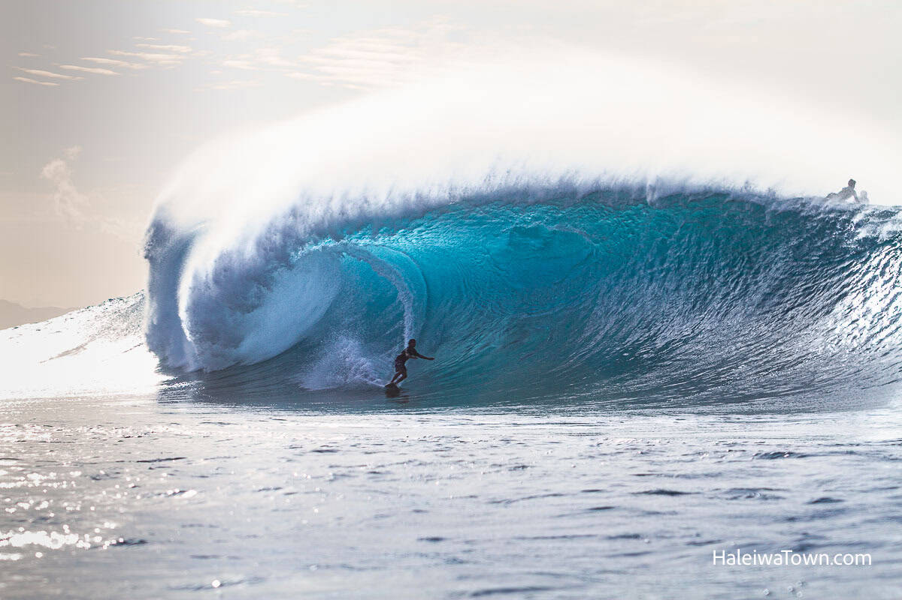
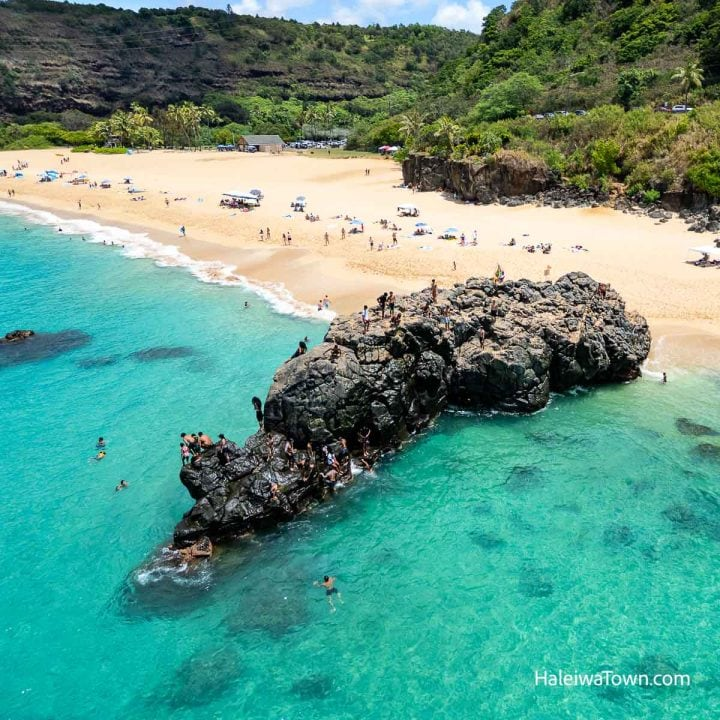

Overview
"The North Shore is known for sandy beaches, clear water and big winter waves. Some days are calm and great for swimming, and other days are best for watching surfers. This page highlights a few famous spots and what each one is known for."
Sunset Beach
Sunset Beach has a long shoreline and great views at the end of the day. Winter swells can bring big surf, and calmer seasons are perfect for walks and relaxing by the water.

Banzai Pipeline (Ehukai)
Banzai Pipeline is one of the most famous surf breaks in the world. Waves break over a shallow reef and form fast barrels. It’s a popular place to watch experienced surfers from the sand.
Waimea Bay
Waimea Bay is a wide, beautiful beach with a deep blue bay. In summer it can be calm for swimming and snorkeling. In winter the waves can get powerful and the surf is world-famous.
- The color I chose to emphasize text is Midnight Navy (#00263e).
- The color I chose to de-emphasize text is Dark neutral (#100f0f).
- I chose Midnight Navy because it is a deep, calming color that reflects the ocean theme of the beaches. It stands out well against lighter backgrounds, making emphasized text easy to read.